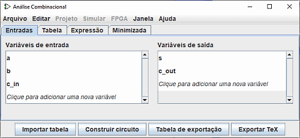
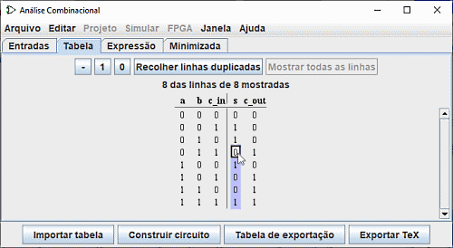

Editar a tabela-verdade
Ao abrir a janela da Análise Combinacional, você irá ver que é composto de quatro guias.
Esta página descreve as dois primeiras guias: entradas e saídas e Tabela. A próxima página do manual descreverá as duas últimas guias: Expressão e Minimizada.
As guias Entradas e Saídas

A guia Entradas e Saídas permite exibir e editar listas de entradas e/ou saídas e especificar a largura dos seus dados.
Para adicionar itens à lista, basta selecionar a linha com tecla Seta para cima ou Seta para baixo ou clicar em "Clique para..." e digite o nome desejado. Você pode ver na figura acima a linha "c_out" inserida na lista de saídas. Então você pode definir a largura de dados desta linha (à direita) com o mouse. A tecla Enter ou Tab terminará a entrada.
Se você quiser renomear uma das linhas existentes, clique duas vezes sobre o texto para modificá-lo.
Para apagar uma linha, selecione-a como antes com o mouse ou com as setas para cima ou para baixo e depois use a tecla Delete.
Para reordenar a ordem das linhas, selecione a ordem como antes e use a combinação Ctrl+Seta para Cima ou Ctrl+Seta para Baixo para movê-la para cima ou para baixo na lista.
Todas as acções têm um impacto directo na apresentação da Tabela da Verdade.
A guia Tabela
Na aba Tabela você encontrará uma série de botões e a tabela da verdade. Isto é organizado em uma ordem convencional, com entradas colunares à esquerda e saídas colunares à direita.

Você pode alterar os valores atuais nas colunas de saída clicando no valor que lhe interessa e usando as teclas do teclado 0,1 e - (representando um valor indefinido) ou os botões - , 1 , 0 na parte superior. Após entrar o valor, o cursor desce uma linha na coluna. As combinações de teclas Seta Cima/Baixo ou Seta Esquerda/Direita são usadas para mover a seleção.
Da mesma forma, você pode modificar os dados nas colunas de entrada inserindo valores indeterminados (-) ou eliminá-los e substituí-los por 0 ou 1's. Como veremos na próxima página, um valor indeterminado permite a elaboração de expressões mínimas com uma certa flexibilidade.
Nesse contexto, o botão Recolher linhas duplicadas simplifica a representação da tabela e o botão Mostrar todas as linhas para mostrá-las na sua totalidade.
Se a tabela da verdade for baseada em um circuito existente, você pode ver quadrados vermelhos nas colunas de saída com "E" dentro. Isto corresponde a erros durante o cálculo dos valores para aquela linha. Ou o circuito parecia oscilar, ou a saída era um erro em si (que deveria ser representado por um cabo vermelho no circuito Logisim).
Próximo: Criar expressões.